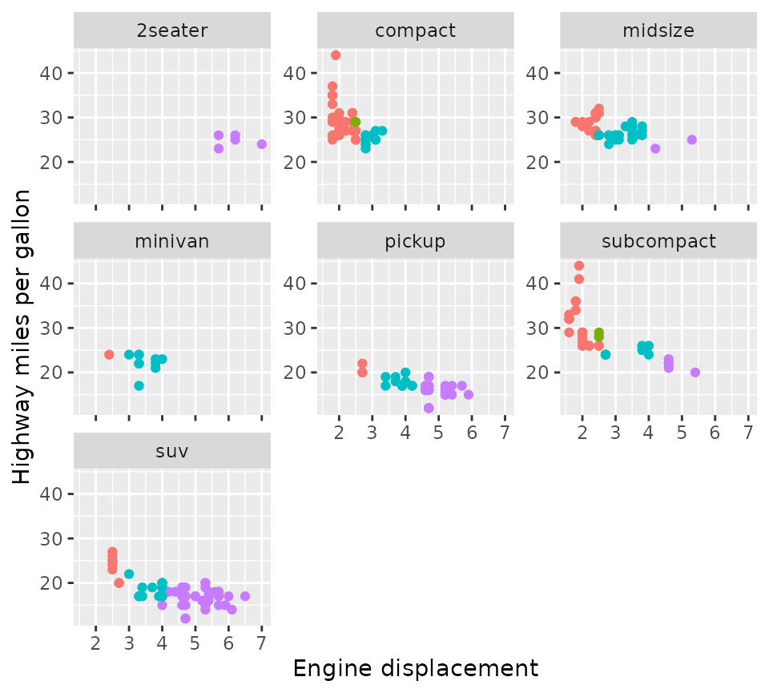
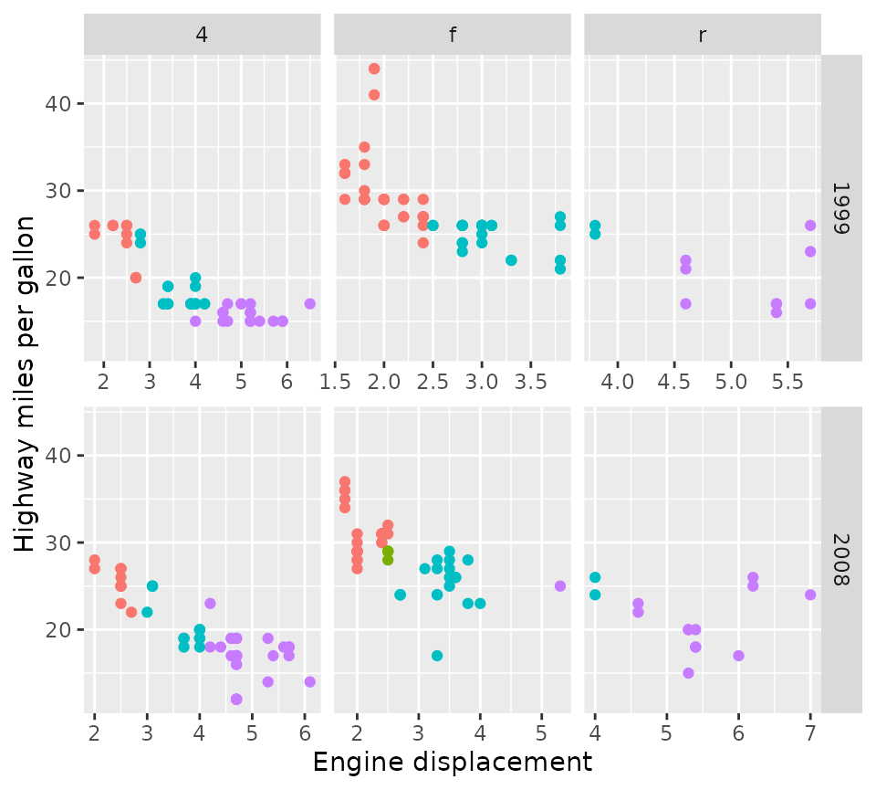
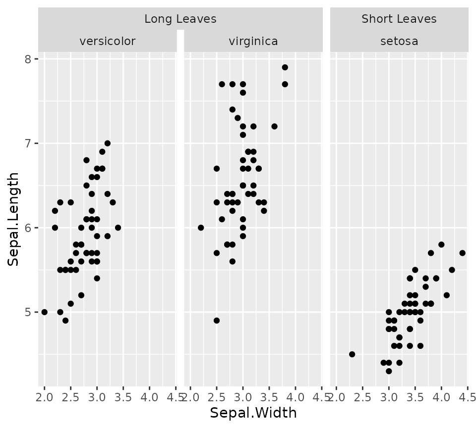
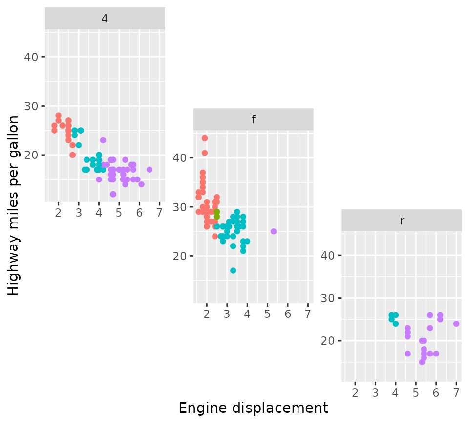
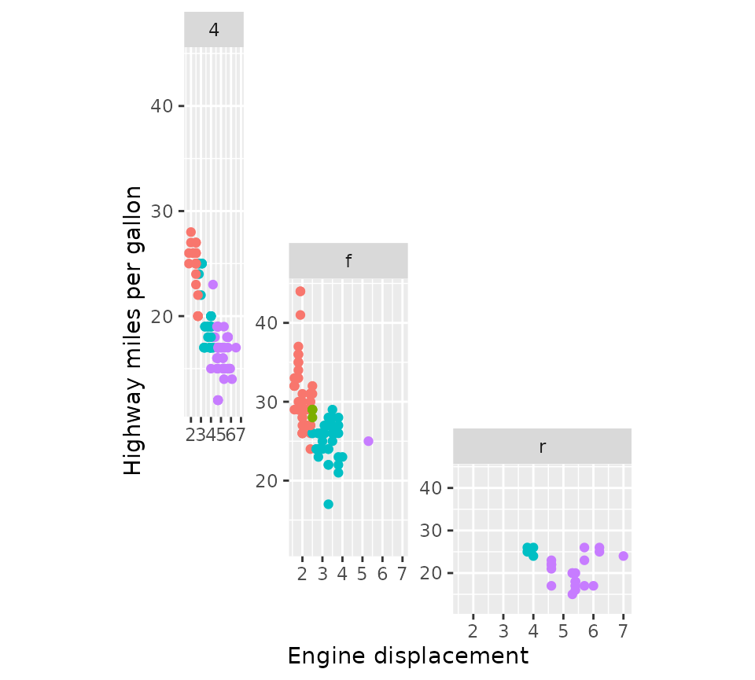
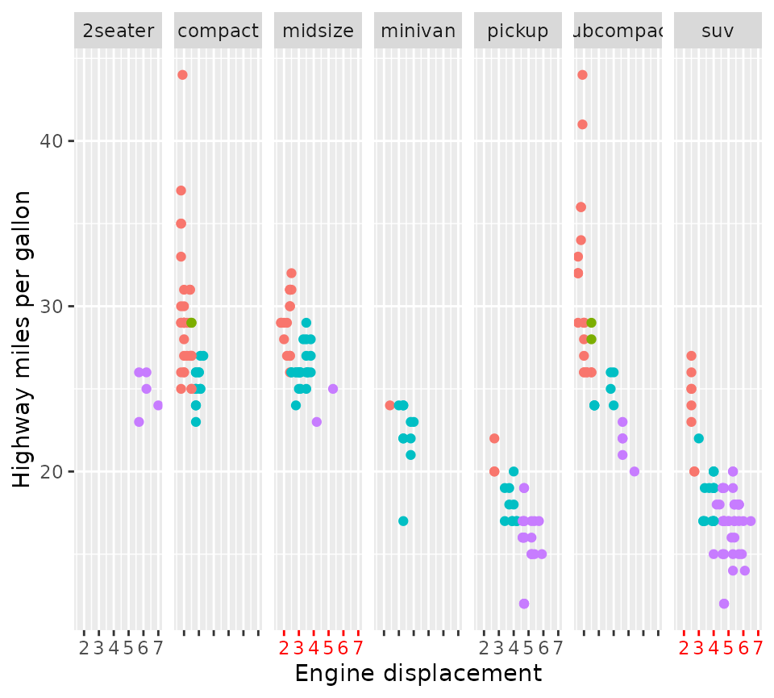
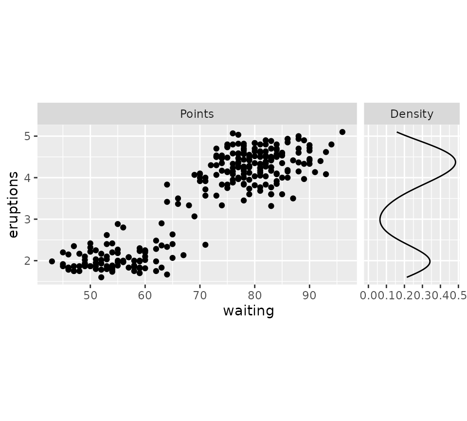

The ggh4x package has some extended options for tweaking the appearance of facets.
Extended facets
This package offers two extensions to the vanilla facet_wrap() and facet_grid() that give you more control of the placement of axes at the inner facets.
Wrap
The default behaviour of facet_wrap2() is to replicate exactly what ggplot2::facet_wrap() does.
# Make a standard plot
p <- ggplot(mpg, aes(displ, hwy, colour = as.factor(cyl))) + geom_point() +
labs(x = "Engine displacement", y = "Highway miles per gallon") +
guides(colour = "none")
p + facet_wrap2(vars(class))The difference is even when scales = "fixed" (the default), you can draw the axes at (some or all) inner facets with the axes argument. Moreover, you can choose to omit the axis labels but keep the axis ticks of the inner facets by setting the remove_labels argument.
p + facet_wrap2(vars(class), axes = "all", remove_labels = "x")
Another nicety is that you can force an exact number of rows and columns.
p + facet_wrap2(vars(class), nrow = 4, ncol = 4, trim_blank = FALSE)Grid
Likewise, facet_grid2() is based on ggplot2::facet_grid() and by default behaves identically, but also supports the extended options for axes that facet_wrap2() has.
p + facet_grid2(vars(year), vars(drv), axes = "all", remove_labels = "y")In addition, facet_grid2() also supports what the package calls ‘independent’ scales. This relieves the constraint that ggplot2::facet_grid() has that a scale can only be free between rows and columns of the layout, and instead allows scales to be free within rows and columns of the layout. This keeps the grid layout but preserves the flexibility of scales in wrapped facets. Notice that in the plot below, the x-axes are independent for each panel.
p + facet_grid2(vars(year), vars(drv), scales = "free_x", independent = "x")
One sacrifice that had to be made for independent scales, is that facet_grid2() cannot have independent scales and have space = "free" for the independent dimensions. You can however combine these in different dimensions.
p + facet_grid2(vars(year), vars(drv),
scales = "free", independent = "y", space = "free_x")Nested facets
Perhaps this package might be best known for generating nested facets; wherein outer strips can span inner strips if they belong the the same category. This can be especially useful if there is some hierarchical relations to the facets.
In the example below, we’ll categorise the Iris species for having long or short leaves.
new_iris <- transform(
iris,
Nester = ifelse(Species == "setosa", "Short Leaves", "Long Leaves")
)
iris_plot <- ggplot(new_iris, aes(Sepal.Width, Sepal.Length)) +
geom_point()
iris_plot +
facet_nested(~ Nester + Species)
Nesting lines
If you prefer your strips to have blank backgrounds, you could still indicate the hierarchical nature by setting nest_line = elment_line(). The appearance of the line is inherited from the theme element ggh4x.facet.nestline. In the example below, the nesting line is dotted because the given element has linetype = 2, but is also blue because it inherits from the theme element.
iris_plot +
facet_nested(~ Nester + Species, nest_line = element_line(linetype = 2)) +
theme(strip.background = element_blank(),
ggh4x.facet.nestline = element_line(colour = "blue"))Relation to facet_grid()
While facet_nested() is based on facet_grid()), there are a few differences. First, facet_nested() inherits from facet_grid2(), so that it inherits the axis features. More notably, facet_nested() doesn’t require input data to have all the facet variables. In the example below, we remove the Species column, to prevent facetting on that variable. Note that if we didn’t specify a new Nester variable, it would put the second set of points in all panels, just like facet_grid().
Furthermore, when strips are placed at the bottom, it rearranges the strips so that the inner strips are closest to the panels and spanning strips are furthest from the panel.
iris_plot +
geom_point(data = ~ transform(.x, Species = NULL, Nester = "All")) +
facet_nested(~ Nester + Species, switch = "x")Variant for facet_wrap()
A similar variant exists for wrapping in facets. It can span the strips for every strip.position argument, and has a few nifty tricks for duplicating the axes or just the axis ticks.
p +
facet_nested_wrap(
vars(cyl, drv), dir = "v", strip.position = "left",
axes = "all", remove_labels = "x"
) +
theme(strip.placement = "outside")Please note that facet_nested_wrap() does not change the underlying layout strategy of ggplot2::facet_wrap(). It does not split sets to separate rows or columns. If you have need of this type of custom layout, read on what facet_manual() can do!
Manual facets
Before discussing manual facets, let me first explain the motivation behind it.
The base-R layout() function
The ‘grid’ and ‘wrap’ layouts of facets are great because they dynamically adapt based on the available data. However, these layouts come with the limitation that every panel occupies a cell in a grid, and we lose some control over where data is drawn. A base R graphics equivalent to set-up multi-panel figures is the layout() function. A neat property of this function is that a single plot can occupy more than one cell in a grid.
# Setting up a design for a layout
design <- matrix(c(1,2,3,2), 2, 2)
layout(design)
par(mar = c(2,2,1,1))
# Making a multi-panel plot based on the layout
df <- mpg
df$colours <- with(df, match(cyl, sort(unique(cyl))))
df$colours <- scales::hue_pal()(4)[df$colours]
splitted <- split(df, df$drv)
xlim <- range(df$displ)
ylim <- range(df$cty)
for (i in seq_along(splitted)) {
with(splitted[[i]], plot(displ, cty, col = colours, pch = 19,
xlim = xlim, ylim = ylim, ))
}The design argument
To achieve a similar level of control over ggplot2 facets, facet_manual() was brought into life. Like the layout() function, facet_manual() requires a pre-specified design of which panels go where. I’ve called these ‘manual’ facets, because it doesn’t dynamically generate a layout based on the available data, like the grid and wrap facets do. The matrix that we had given to the layout() function in the plots above, can now be used as the design argument for the manual facets.
# Use design from previous chunk
p + facet_manual(vars(factor(drv)), design = design)An alternative way of specifying the design is using a character string. The approach to this was inspired by the design argument in the patchwork::plot_layout() function that lets you set columns by using subsequent characters, and set rows by using new lines. Empty cells can be indicated with the #-sign.
design <- "
A##
AB#
#BC
##C
"
p + facet_manual(vars(drv), design = design)
Placement rules
The facet_manual() function has the heights and widths arguments that can be used to set the sizes of rows and columns of the design. In the example below, we’re using integers for the heights argument to specify relative sizes and grid::units for the widths argument to set absolute sizes. These arguments apply to the cells where the panels are drawn. Therefore, the eventual size of a multi-cell panel is likely not the exact sum of cell sizes, because facet_manual() makes room for plot decorations like strips and axes. In the example below, the height of the 4 wheel drive (4) panel is not exactly 3 + 2 = 5 relative units, due to the room that had to be made to fit the x-axis of the front-wheel drive (f) panel and the strip of the rear-wheel drive (r) panel.
p + facet_manual(
vars(drv), design = design,
heights = 4:1, widths = unit(1:3, "cm")
)
The panels above all share the same axes ranges, but because these are drawn in a staggered fashion they should all be displayed. Because there are only limited constraints of where axes can be placed, it is hard to decide what duplicated axes are OK to omit. The manual facets are not ‘smart’ enough to figure this out exactly and just draw the axes for every panel, regardless of whether they are fixed or free. The only exception to this rule, is when all panel occupies exactly 1 cell in the horizontal or vertical direction. Because of this, the remove_labels and axes arguments are trickier to use for facet_manual(), and may only be applied when the criterion above is met.
A word of warning
The manual facets are ‘dumb’ in the sense that they don’t protect you against ‘illegal’ layouts. If you specify non-rectangular areas in the design argument, it will simply calculate the range of rows and columns a panel will occupy, which can lead to (partially) overlapping panels. It is up to the user to decide what is right in these cases and the facets are not prohibitive.
design <- "
AA#
ACB
#BB
"
p + facet_manual(vars(drv), design = design)Strips
Strips are an important part of facets because they indicate what small multiple of data is displayed where. In ggplot2, strips are married to the facet functions, which control what is rendered how and where they are placed. For facet functions in ggh4x, strips are divorced from facets and strips are allowed to decide how they are rendered and where they are placed. All ggh4x facetting functions have gained the strip argument that take a new Strip class that can constructed with the strip_*() family of functions.
Vanilla strips
A style of strips that most closely resembles strips in ggplot2 are vanilla strips that can be constructed using the strip_vanilla() function. It is the default strip for facet_grid2(), facet_wrap2() and facet_manual(). Their behaviour mirrors the behaviour of ggplot2’s strips by default, but they come with two extra arguments.
The clip argument controls whether the content of the strip is clipped to the boundaries of the strip background. When clipping is on (the default), any line-width applied to the strip background is effectively halved in size and near impossible to get nicely aligned with, for example, axis lines. When clipping is off, the strip backgrounds have their full line-widths, and strip text is allowed to exceed the confines of the background.
p2 <- p +
theme(strip.background = element_rect(colour = "black", size = 2),
axis.line.y = element_line(colour = "black", size = 2))
p2 + facet_wrap2(vars(year), strip = strip_vanilla(clip = "on")) +
ggtitle('clip = "on"')
p2 + facet_wrap2(vars(year), strip = strip_vanilla(clip = "off")) +
ggtitle('clip = "off"')The second argument, size, controls how the size of strips are calculated in the context of multi-layered strips. The default, "constant", calculates a single size for every layer. Normally, this makes everything looks tidy, but can become awkward when longer labels are combined with shorter labels.
df <- data.frame(
long = paste("A long title that is going to make the\n",
"smaller title take up too much space"),
short = LETTERS[1:3],
x = 1:3, y = 1:3
)
p2 <- ggplot(df, aes(x, y)) +
geom_point() +
theme(strip.text.y.left = element_text(angle = 0),
strip.placement = "outside",
plot.title.position = "plot")
p2 + facet_grid2(long + short ~ ., switch = "y",
strip = strip_vanilla(size = "constant")) +
ggtitle('size = "constant"')Setting size = "variable" instead shrinks excessive spacing from strips on a per-layer basis.
p2 + facet_grid2(long + short ~ ., switch = "y",
strip = strip_vanilla(size = "variable")) +
ggtitle('size = "variable"')Themed strips
An extension of the vanilla strips is themed strips. In addition to the clip and size arguments, these strips allow you to set the strip.text.* and strip.background.* theme settings on a per-label or per-layer basis. The background_x/y and text_x/y arguments accept a list of ggplot2 theme elements. If the number of theme elements does not fit the number of strips, the theme elements will be expanded with rep_len() as shown with the vertical strips below.
It can be a bit of a pain to construct a list of elements per the following: list(element_text(colour = "dodgerblue", face = "bold), element_text(colour = "limegreen", face = "bold)). Instead, there are convenience functions that let you get the exact same results by using elem_list_text(colour = c("dodgerblue", "limegreen"), face = c("bold", "bold")), which is slightly less verbose. There is also a elem_list_rect() function to do the same for element_rect().
ridiculous_strips <- strip_themed(
# Horizontal strips
background_x = elem_list_rect(fill = c("limegreen", "dodgerblue")),
text_x = elem_list_text(colour = c("dodgerblue", "limegreen"),
face = c("bold", "bold")),
by_layer_x = TRUE,
# Vertical strips
background_y = elem_list_rect(
fill = c("gold", "tomato", "deepskyblue")
),
text_y = elem_list_text(angle = c(0, 90)),
by_layer_y = FALSE
)
p + facet_grid2(class ~ drv + year, strip = ridiculous_strips)The list of elements does not need to be a homogeneous list of the same type of elements. You can use NULL to inherit directly from the theme, and element_blank() to skip drawing the element. The themed strips should in theory also accept extended theme elements -it accepts for example ggtext::element_markdown()- provided that the implementation has a element_grob() method and the resulting graphical objects communicate their size appropriately. The constraints are similar to the constraints in theme(): text elements should inherit from element_text and background elements should inherit from element_rect.
p + facet_grid2(
. ~ drv + year,
strip = strip_themed(
background_x = list(NULL, element_rect(colour = "black"), element_blank(),
element_rect(fill = "black")),
text_x = list(NULL, NULL, NULL, element_text(colour = "white"))
)
)Nested strips
The crux of nested strips has already been introduced in nested_facets: they merge strips that have the same labels at the same height. They are the default strips in facet_nested() and facet_nested_wrap() and they are constructed using strip_nested(). There is nothing special that makes these facets more suitable for strips, and you can use nested strips in facet_grid2(), facet_wrap2() and facet_manual() too. Because the nested strips are based on strip_themed(), the appearance of strips can be tweaked in the same way. The nested strips only have one extra argument, bleed, that controls whether lower layer nested strips are allowed to merge when higher layer nested strips are different. In the example below, you can see in the 2nd and 3rd panels that the two “f” labels aren’t merged because higher strips are different (“4”and “5”).
p + facet_wrap2(
vars(cyl, drv), ncol = 4,
strip = strip_nested(bleed = FALSE)
) +
ggtitle('bleed = FALSE')In contrast, when bleed = TRUE, lower layer strips are allowed to ‘bleed’ into one another even though the higher level strips are different. In the example below, you can see that the “f” strips of the 2nd and 3rd panel have merged, even though they have different labels (“4” and “5”) in higher layer strips.
p + facet_wrap2(
vars(cyl, drv), ncol = 4,
strip = strip_nested(bleed = TRUE)
) +
ggtitle("bleed = TRUE")Another difference between strip_nested() and other strips, is that the ordering of the layers is always such that the inner layers are closer to the panels than the outer layers. It felt like the right decision because if we’re trying to distinguish hierarchies, it sense to place the more fine-grained hierarchy closer to the data that is a member of that hierarchy.
p + facet_grid2(
cols = vars("Outer label", "Inner label"),
switch = "x", strip = strip_vanilla()
) +
ggtitle("strip_vanilla()")
p + facet_grid2(
cols = vars("Outer label", "Inner label"),
switch = "x", strip = strip_nested()
) +
ggtitle("strip_nested()")Position scales
Another thing we might want to tweak about facets is the exact specifications of each facet’s position scale. To set the scales individually, we can use facetted_pos_scales() in combination with a list of scales. This way, you can vary labels, breaks, limits, transformations and even axis guides for each panel individually.
Lists of scales
The list of scales follows the order of the facets, as long as they are set to ‘free’. Tweaking the position scales works with many types of facets, such as wrap, grid and nested, but has to be called after facets are added. If you don’t want the scales to be free, you can use the xlim() and ylim() functions to fix the limits, but the facetted_pos_scales() function requires the scales argument in a facet to be "free" in order to apply the different scales.
scales <- list(
scale_x_reverse(),
scale_x_continuous(labels = scales::dollar,
minor_breaks = c(2.5, 4.5)),
scale_x_continuous(breaks = c(2.945, 6),
limits = c(0, 10),
guide = "axis_minor")
)
p + facet_wrap(vars(drv), scales = "free_x") +
facetted_pos_scales(x = scales)Formula notation
Because it might be inconvenient to predict in programmatically which data might end up in what position, there is also an option to use two-sided formulas to set scales by panel. The formula notation is inspired by dplyr::case_when() and lets you use the left hand side (LHS) to decide where to apply scales, and the right hand side (RHS) to decide what scales to apply. The LHS of the formula will be evaluated in the context of the plot’s layout. This is an internal structure that (for good reasons) isn’t normally exposed, so it requires a bit of knowledge to know what can be used. For most facets, the plot layout is a data.frame that contains the COL, ROW and PANEL columns that keep track of what panel goes where in the grid of cells. In addition, it contains the faceting variables, such as class in the example below.
p +
facet_wrap(vars(class), nrow = 1, scales = "free_x") +
xlim(range(mpg$displ)) +
facetted_pos_scales(x = list(
COL %% 2 == 0 ~ scale_x_continuous(labels = NULL, limits = xlim),
class %in% c("midsize", "suv", "subcompact") ~ scale_x_continuous(
guide = guide_axis_colour(colour = "red"), limits = xlim
)
))
In the example above, we removed the label from every even column by using COL %% 2 == 0, wherein COL is a column in the aforementioned layout structure. We also made the axes of the "midsize" and "suv" classes red. The reason we don’t see red axis ticks in the "subcompact" panel is that applying scales is prioritised based on the order of formulas. Because the "subcompact" panel is also on an even column, and the ‘even columns have no labels’-formula was first, it gets excluded from the second formula.
Convenience notation
If you prefer the regular syntax of ‘adding’ components to a plot, you can also get the results above by using scale_x_facet(). Instead of providing a two sided formula, the first argument (expr) takes an expression that is evaluated in the context of the layout structure. To get the equivalents of, for example, scale_x_log10(), scale_x_reverse() or scale_x_date(), you can provide type = "log10", type = "reverse" and type = "date" respectively.
p +
facet_wrap(vars(class), nrow = 1, scales = "free_x") +
xlim(range(mpg$displ)) +
scale_x_facet(
COL %% 2 == 0,
labels = NULL, limits = xlim
) +
scale_x_facet(
class %in% c("midsize", "suv", "subcompact"),
limits = xlim,
guide = guide_axis_colour(colour = "red")
)Interaction with stats
The facetted_pos_scales() works because it makes an edit to the facet, which comes with an important limitation. Due to the way plots are build and when facets are involved, scale transformations are applied after calculations in the stat part of the layer. This differs from normal behaviour, where scale transformations are applied before stat calculations. Therefore, it is recommended to pre-transform the data in layers with non-identity statistics in the aes() mapping. An example of what could go wrong is shown below.
set.seed(0)
df <- data.frame(
x = rlnorm(100, 10)
)
# Normally data is transformed prior to stat calculations
ggplot(df, aes(x)) +
geom_density() +
scale_x_log10() +
ggtitle("standard log10 scale")
# This can give problems when combining stat calculations with facetted
# position scale transformations.
ggplot(df, aes(x)) +
geom_density() +
facetted_pos_scales(x = list(scale_x_log10())) +
ggtitle("facetted scale")
# Pre-transformed data
ggplot(df, aes(log10(x))) +
geom_density() +
facetted_pos_scales(x = list(scale_x_continuous())) +
ggtitle("facetted scale +\npre-transformation")If you plan on using facetted_pos_scales() to tweak the axis of the plots, do take a look at the position guides!
Panel sizes
Lastly, we can also set the sizes of the panels to what we want. The function force_panelsizes() can let you set relative or absolute sizes for the rows and columns. The function should be applicable to facets that follow typical ggplot2 conventions. That includes, but is not limited to, the facet functions in ‘ggplot2’, those in the ‘ggforce’ package, those in ‘ggh4x’ and possibly others (it’s redundant for facet_manual() though). Notably, it also applies to facet_null(), the default facet in every plot.
p + force_panelsizes(rows = unit(2, "cm"), cols = unit(2, "in"))The settings overrule the coordinates’ or theme’s aspect ratio and space = "free" facet arguments. By default, rows and columns are set relative within themselves only. When respect = TRUE, the rows and columns relative units become also relative between rows and columns, as you can see in the plot below. Alternatively, you can set them as absolute units with the grid::unit() function. Again, these need to be added after any facets.
lvls <- c("Points", "Density")
g <- ggplot(faithful) +
geom_point(aes(waiting, eruptions),
data = ~ cbind(.x, facet = factor(lvls[1], lvls))) +
geom_density(aes(y = eruptions),
data = ~ cbind(faithful, facet = factor(lvls[2], lvls))) +
facet_grid(~ facet, scales = "free_x") +
force_panelsizes(cols = c(1, 0.2),
rows = c(0.5),
respect = TRUE)
g
If you think the breaks of the density plot above are too packed, why not tweak these with facetted_pos_scales()? Note that NULL signals here that the default scale should be used.
g + facetted_pos_scales(x = list(NULL, scale_x_continuous(breaks = c(0, 0.2, 0.4))))